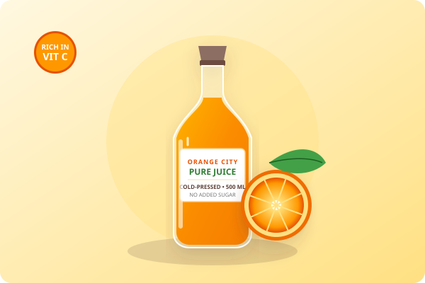
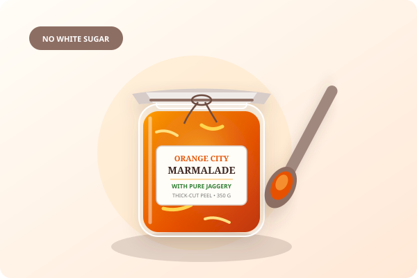

Freshly Pressed

Cold-Pressed Orange Juice
Raw, untreated juice gently squeezed from tree-ripened Nagpur mandarins. Retains all natural pulpy fiber, bioflavonoids, and vitamin C. 500 ml glass bottle.
From invigorating morning juices to sunset herbal teas, explore our trio of artisanal staples made exclusively from genuine Vidarbha citrus.
Every product is batch-numbered and prepared using traditional recipes with no artificial coloring or shelf-life chemicals.

Raw, untreated juice gently squeezed from tree-ripened Nagpur mandarins. Retains all natural pulpy fiber, bioflavonoids, and vitamin C. 500 ml glass bottle.

Thick-cut aromatic peel slowly simmered with golden organic jaggery and fresh lime juice. Distinct bittersweet balance, free of white sugar and pectin powder. 350 g jar.
Sun-cured Nagpur orange peel ribbons infused with fragrant Vidarbha Krishna tulsi and dried ginger shavings. A soothing, caffeine-free infusion rich in antioxidants. 100 g pouch.
Our juice is chilled immediately post-pressing and dispatched in thermal-insulated packaging. It must be refrigerated upon arrival and enjoyed within 5 days.
Yes! We curate custom wooden gift crates containing fresh oranges, marmalade jars, and tea pouches. Reach out through our contact page to discuss bulk options.
Looking for fresh seasonal fruit boxes? Submit a bulk enquiry or return to our Home page.